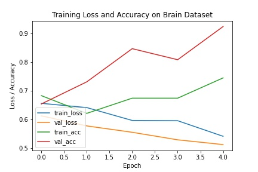

--- About The Model ---
The model is built using a Convolutional Neural Network or CNN.
It is trained on a dataset of 257 labelled images of brain MRI.
Dataset source: Kaggle
The model is built using VGG16 state-of-the-art network model that is available in Keras.
The Model can classify Input image of Brain MRI in on of the two categories:
1. Brain Tumer detected
2. Brain Tumor not detected
The following Graph shows the accuracy and loss information of the model on training and testing dataset:
